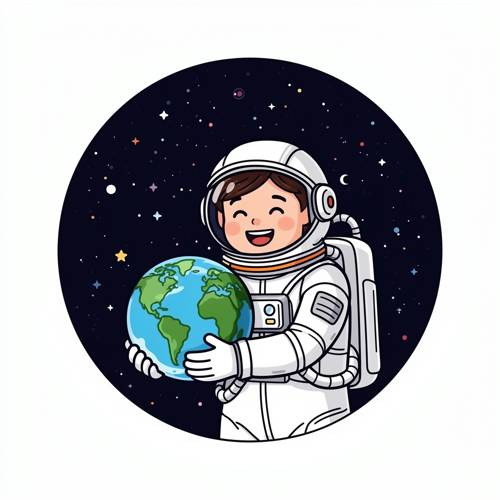
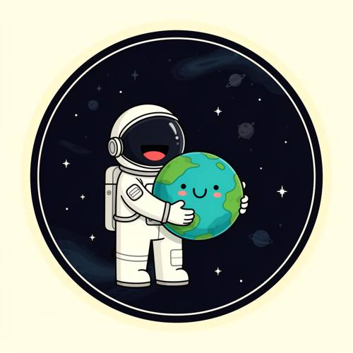
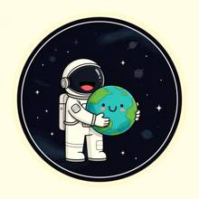

Entity Layout — A flat-style badge design shows a happy astronaut hugging a small plan
A flat-style badge design shows a happy astronaut hugging a small planet on the left. They all smile and the background is the deep universe.

Direct — one call, no iteration

Continuum — Qwen3.8-27B + FLUX.2-dev
Judge — Direct
FAILEntity Layout - Two-Dimensional Space — The image shows an astronaut hugging a small planet in the center of the circular frame, not on the left.
PASSStyle — The image is rendered in a cartoon illustration style with bold outlines and mostly flat colors, presented within a circular frame, which is consistent with a flat-style badge design.
FAILGrammar - Consistency — The astronaut is smiling, but the planet, depicted as a realistic globe, does not have a face or a smile. Therefore, the 'they all smile' condition is not met.
PASSAction - Contact Interaction — The astronaut's arms are wrapped around the small planet, holding it close to their chest in a hugging gesture.
PASSAttribute - Expression — The astronaut's face, visible through the helmet, shows a wide-open mouth smile, rosy cheeks, and eyes crinkled shut, clearly expressing happiness.
Judge — Continuum
PASSEntity Layout - Two-Dimensional Space — In the circular design, the main subject, which is an astronaut hugging a small planet, is positioned slightly to the left of the center.
PASSStyle — The image is rendered in a flat style, characterized by bold outlines, simple shapes, and minimal shading. The composition is contained within a circular border, giving it the appearance of a badge.
PASSGrammar - Consistency — Both the astronaut and the planet are depicted with smiles. The astronaut has a wide, open-mouthed smile visible through its helmet's visor, and the planet has a simple, curved line for a smiling mouth.
PASSAction - Contact Interaction — The astronaut's arms are wrapped around the small planet, with its hands resting on the planet's sides, clearly depicting the action of hugging.
PASSAttribute - Expression — The astronaut is shown with a wide, open-mouthed smile, which is a clear visual representation of a happy expression.
What the agent did
Thinking
Let me analyze the prompt: "In a flat-style badge design, a happy astronaut on the left is hugging a small planet. Everyone is smiling, and the background is a deep universe." So what I need: 1. Flat-style badge design (circular badge shape is typical) 2. A happy astronaut hugging a small planet, positioned on the left 3. All smiling (astronaut smiling, planet also has a smiling face) 4. Background: deep universe (space with stars) Let me generate the image with flux2-dev. I'll fill in visual details: flat design, minimal shapes, limited color palette, circular badge, astronaut in white suit with helmet, smiling small planet (with a face), stars, maybe crescent moon and planet, deep navy/black cosmic background. Let me write a good prompt: "Flat-style circular badge design: a happy cartoon astronaut in a white spacesuit on the left side, hugging a small smiling planet with a cute face (pale blue/teal planet with a happy smile), both of them beaming smiles. Deep universe background in deep navy blue with small white stars, tiny stars, and faint nebula dots. Flat vector illustration style, bold simple shapes, limited color palette, no gradients, centered circular badge, clean edges, sticker/badge look." The image size is fixed — probably 1024x1024. Let me generate it.
Step 1 — `generate_image`
{
"prompt": "Flat-style circular badge design, flat vector illustration. A happy cartoon astronaut in a white spacesuit with a clear helmet stands on the left, arms wrapped around a small cute planet, hugging it tightly. The small planet is teal-blue with green patches and has a big happy smiling face with simple dot eyes and a curved smile. The astronaut has a wide joyful smile visible in the helmet. Background is a deep dark navy universe filled with small white stars, a few tiny plus-shaped sparkles and small distant planets, subtle flat nebula shapes. Limited flat color palette, simple bold shapes, no gradients, clean vector edges, centered circular badge composition with a thin cream ring border.",
"model": "flux2-dev"
}
Result img_0

Thinking
The result is pretty good. Let me evaluate it against the prompt: 1. Flat-style badge design ✓ (circular badge with ring border) 2. Happy astronaut hugging a small planet on the left — the astronaut is in the left-center and hugging the planet. The planet is on the right side of the astronaut. "Astronaut hugging a small planet on the left" — probably means the astronaut (on the left side of the badge) is hugging the planet. The composition has the astronaut on the left hugging the planet, so it works. 3. Everyone is smiling ✓ — astronaut is smiling (big open smile), planet also has a smile ✓ 4. Background is deep universe ✓ — deep navy with stars, sparkles, small planet. Looks pretty good. Flat style, happy expressions, everything is in place. Minor nitpicks: the background is dark navy which reads as deep universe, no problem. The badge ring is cream-colored, which is good. Are there any flaws? The astronaut's smile is visible through the dark visor — good. The planet's face has a smile — good. The hugging pose — the astronaut's arms are wrapping around the planet — good. I think this is a good result. Let me zoom in and check the face to make sure the smile is clearly readable.
Model
The first result looks close to the goal. Let me zoom into the faces to verify the smiles read clearly.
The astronaut's face has a big open smile, and the planet has a smiling face with pink cheeks. The hugging pose is also clear. All elements are present: 1. Flat-style badge design ✓ 2. Astronaut on the left, hugging a small planet ✓ 3. Both are smiling ✓ 4. Deep universe background ✓ This is a good result. Marking it as the best and stopping — following the policy of "good enough is a stopping condition."
Model
On zooming in, the details are clearly confirmed: the astronaut has a big, cheerful open-mouthed smile visible through the helmet, and the planet has a sweet smiling face with rosy cheeks. The hugging pose is clear, the flat badge style with the ring border is preserved, and the deep starry sky background is well rendered too. All the elements of the prompt are present and correct.
Step 3 — `mark_best`
{
"image": "img_0",
"reason": "Flat circular badge with a happy astronaut on the left hugging a small smiling planet, both beaming, deep starry universe background. All prompt elements verified by zoomed inspection."
}
Thinking
Marked. The task is complete. I'll convey the final summary to the user.
Model
The badge is done. It features: - **Flat-style circular badge** with a thin cream ring border - **Happy astronaut on the left** in a white spacesuit, arms wrapped around a small teal-and-green planet - **Both smiling** — the astronaut has a big open-mouthed grin behind the helmet, and the planet has a cute smiling face with rosy cheeks - **Deep universe background** in dark navy, dotted with stars, sparkles, and a few tiny distant planets The result is marked as the final version.